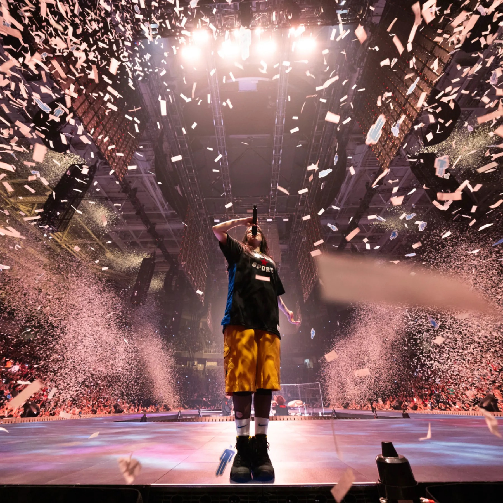

Le retour de l'album live
À l'ère du son parfait, lissé, corrigé au millimètre, une chose redevient précieuse : l'erreur. L'album live fait son grand retour, et avec lui le goût du vrai, du brut, de ce qui ne se reproduira jamais deux fois à l'identique.

Quand tout est trop propre
La musique n'a jamais été aussi bien produite, et pourtant quelque chose manque. À force de tout corriger, de replacer chaque note, de caler chaque voix sur la grille, on a parfois effacé l'âme. Une voix qui tremble, un public qui hurle, un musicien qui part en impro : voilà ce qu'aucun studio ne peut fabriquer. Le live, c'est la preuve que derrière le son, il y a des êtres humains.
Ce besoin de vrai n'est pas un hasard. Plus la technologie rend tout lisse, plus on cherche la trace de la main, le grain, l'imperfection qui rassure. On a passé une décennie à courir après la perfection numérique, et on se réveille en réalisant qu'elle nous ennuie un peu.
Le public, lui, ne s'y trompe pas. Les salles se remplissent, les tournées battent des records, et les captations de concerts explosent les compteurs. Comme si, après des années d'écouteurs et de playlists solitaires, on avait soudain besoin de se retrouver ensemble, au même endroit, au même moment.
Un disque qui a une date
Un album live, ce n'est pas qu'une performance : c'est un instant gravé. On ne l'écoute pas, on y assiste — même des années plus tard. Il raconte un soir précis, une salle précise, une énergie qu'on ne retrouvera plus.
C'est ce qui le rend si différent d'un disque de studio. Un album classique vit hors du temps ; un live est daté, situé, incarné. On sait où on était, ce qui se jouait, qui chantait. Il devient un repère, presque un souvenir partagé par tous ceux qui l'écoutent.
Pourquoi ça revient maintenant
Parce qu'une génération élevée au streaming redécouvre la valeur de l'éphémère. Dans un monde où tout est disponible tout le temps, le concert devient le dernier endroit où il faut être là, au bon moment, sans rejouer la scène. Le live est devenu le vrai luxe : celui de l'instant qu'on ne peut pas rembobiner.
Et les artistes l'ont compris. Capturer une tournée, un passage mythique, une version unique d'un morceau : c'est offrir au public un souvenir autant qu'une chanson. Le disque devient une relique, la preuve matérielle qu'on y était, ou qu'on aurait voulu y être.
Il y a aussi une forme de revanche là-dedans. Pendant des années, on a dit que la musique enregistrée tuerait le concert. C'est l'inverse qui se produit : à force de tout dématérialiser, c'est le moment vivant qui reprend de la valeur. Ce qu'on ne peut pas télécharger devient ce qu'on désire le plus.
La technique au service de l'émotion
Enregistrer un live n'a jamais été aussi simple ni aussi beau. La technologie, longtemps accusée de tout lisser, sert désormais à capter l'imperfection sans la trahir. Le progrès ne tue pas le vrai — il peut aussi le sublimer.
Micros plus fins, captations multipistes, mixages qui respectent le grain de la salle : on peut aujourd'hui restituer un concert dans ses moindres détails, le souffle du public compris. L'outil n'est plus l'ennemi de l'émotion, il en devient le meilleur allié.
Ce qu'on vient vraiment chercher
On n'écoute pas un album live pour la perfection. On l'écoute pour se souvenir qu'on était vivant, ce soir-là ou un autre. Le concert nous reconnecte à quelque chose de physique, de collectif, d'humain : être là, entouré d'inconnus qui chantent la même chose que nous.
La musique n'est jamais aussi belle que quand elle a le droit de trembler. Dans une époque d'écrans, de solitude et de sons fabriqués, le live reste l'un des rares moments où l'on ressent la musique avec tout le corps. On ne revient pas à l'album live par nostalgie : on y revient parce qu'on a besoin, encore, de vivre quelque chose pour de vrai.
Le studio cherche la perfection, le live cherche la vérité. Et c'est la vérité qu'on garde en mémoire.